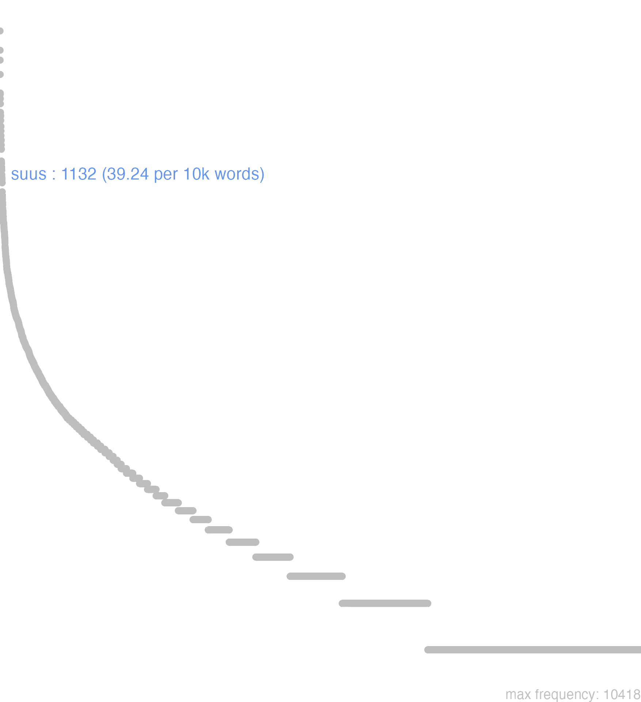

168 suus
168.0.0.1 bases lexicais
id: http://lila-erc.eu/data/id/lemma/127165
classe: determinante
paradigma: 1ª classe (tema em -a/o-)
outras grafias: souos, suos, suusmet, suuspte
variantes do lema:
no data
sŭus
sŭa
sŭum
no data
168.0.0.2 dicionários tradicionais
suus -a -um
pron. poss.
pron. poss. com reforço da enclítica -met:
pron. poss.
1 I-Sent. próprio Seu, sua sent. reflexivo Cíc. Cat. 3, 3.
2 I-Sent. próprio Próprio, que pertence como propriedade particular, particular, especial Cíc. Cal. 1, 32.
3 II-Sent. particular: Favorável, afeiçoado, dedicado, útil, propício Cíc. Mil. 89.
4 II-No m. pl.: Os seus, os seus parentes, os seus partidários, os seus concidadãos Cíc. Fin. 2, 97.
5 II-No n. pl.: sua, -ōrum: As suas propriedades, os seus bens, a sua fortuna Cés. B. Gal. 1, 43.
pron. poss. com reforço da enclítica -met:
1 Seu próprio Cíc. De Or. 3, 10.
no data
Suus -a -um Ter. genit. do plur. por Suorum Suum
Suus sua suum
Recipr.
Suus -a um
1 cousa sua. ou propria
168.0.0.3 dados de corpus
![This chart plots collocate by scoreSUBST, for the headword suus here are all the values plotted: collocate: finis; scoreSUBST: 3. collocate: domus2; scoreSUBST: 3. collocate: ius; scoreSUBST: 3. collocate: quisque; scoreSUBST: 0. collocate: copia; scoreSUBST: 3. collocate: spons; scoreSUBST: 4. collocate: uirtus; scoreSUBST: 2. collocate: discipulus; scoreSUBST: 3. collocate: domus; scoreSUBST: 2. collocate: constitutio; scoreSUBST: 3. collocate: salus; scoreSUBST: 2. collocate: nomen; scoreSUBST: 2. collocate: uis; scoreSUBST: 2. collocate: manus; scoreSUBST: 2. collocate: studium; scoreSUBST: 2. collocate: de; scoreSUBST: 0. collocate: natura; scoreSUBST: 2. collocate: scelus; scoreSUBST: 2. collocate: familiaris; scoreSUBST: 0. collocate: uitium; scoreSUBST: 2. collocate: dignitas; scoreSUBST: 2. collocate: neque; scoreSUBST: 0. collocate: pro; scoreSUBST: 0. collocate: uita; scoreSUBST: 2. collocate: fortuna; scoreSUBST: 2. collocate: maiores; scoreSUBST: 2. collocate: ciuis; scoreSUBST: 2. collocate: dolor; scoreSUBST: 2. collocate: pars; scoreSUBST: 2. collocate: arbitrium; scoreSUBST: 2. collocate: liberi; scoreSUBST: 2. collocate: commodum; scoreSUBST: 2. collocate: propinquus; scoreSUBST: 0. collocate: monumentum; scoreSUBST: 2. collocate: magnitudo; scoreSUBST: 2. collocate: consuetudo; scoreSUBST: 2. collocate: concilio; scoreSUBST: 0. collocate: pristinus; scoreSUBST: 0. collocate: paeniteo; scoreSUBST: 0. collocate: decretum; scoreSUBST: 2. collocate: reditus; scoreSUBST: 2. collocate: claudo; scoreSUBST: 0. collocate: status; scoreSUBST: 2. collocate: sensus; scoreSUBST: 2. collocate: cogitatio; scoreSUBST: 2. collocate: specto; scoreSUBST: 0. collocate: sedes; scoreSUBST: 2](./Media/wordcloud__xx115-117-117-115xx__BY_collocate_scoreSUBST.webp)
![This chart plots collocate by scoreADJ, for the headword suus here are all the values plotted: collocate: finis; scoreADJ: 0. collocate: domus2; scoreADJ: 0. collocate: ius; scoreADJ: 0. collocate: quisque; scoreADJ: 0. collocate: copia; scoreADJ: 0. collocate: spons; scoreADJ: 0. collocate: uirtus; scoreADJ: 0. collocate: discipulus; scoreADJ: 0. collocate: domus; scoreADJ: 0. collocate: constitutio; scoreADJ: 0. collocate: salus; scoreADJ: 0. collocate: nomen; scoreADJ: 0. collocate: uis; scoreADJ: 0. collocate: manus; scoreADJ: 0. collocate: studium; scoreADJ: 0. collocate: de; scoreADJ: 0. collocate: natura; scoreADJ: 0. collocate: scelus; scoreADJ: 0. collocate: familiaris; scoreADJ: 2. collocate: uitium; scoreADJ: 0. collocate: dignitas; scoreADJ: 0. collocate: neque; scoreADJ: 0. collocate: pro; scoreADJ: 0. collocate: uita; scoreADJ: 0. collocate: fortuna; scoreADJ: 0. collocate: maiores; scoreADJ: 0. collocate: ciuis; scoreADJ: 0. collocate: dolor; scoreADJ: 0. collocate: pars; scoreADJ: 0. collocate: arbitrium; scoreADJ: 0. collocate: liberi; scoreADJ: 0. collocate: commodum; scoreADJ: 0. collocate: propinquus; scoreADJ: 2. collocate: monumentum; scoreADJ: 0. collocate: magnitudo; scoreADJ: 0. collocate: consuetudo; scoreADJ: 0. collocate: concilio; scoreADJ: 0. collocate: pristinus; scoreADJ: 2. collocate: paeniteo; scoreADJ: 0. collocate: decretum; scoreADJ: 0. collocate: reditus; scoreADJ: 0. collocate: claudo; scoreADJ: 0. collocate: status; scoreADJ: 0. collocate: sensus; scoreADJ: 0. collocate: cogitatio; scoreADJ: 0. collocate: specto; scoreADJ: 0. collocate: sedes; scoreADJ: 0](./Media/wordcloud__xx115-117-117-115xx__BY_collocate_scoreADJ.webp)
![This chart plots collocate by scoreVERBO, for the headword suus here are all the values plotted: collocate: finis; scoreVERBO: 0. collocate: domus2; scoreVERBO: 0. collocate: ius; scoreVERBO: 0. collocate: quisque; scoreVERBO: 0. collocate: copia; scoreVERBO: 0. collocate: spons; scoreVERBO: 0. collocate: uirtus; scoreVERBO: 0. collocate: discipulus; scoreVERBO: 0. collocate: domus; scoreVERBO: 0. collocate: constitutio; scoreVERBO: 0. collocate: salus; scoreVERBO: 0. collocate: nomen; scoreVERBO: 0. collocate: uis; scoreVERBO: 0. collocate: manus; scoreVERBO: 0. collocate: studium; scoreVERBO: 0. collocate: de; scoreVERBO: 0. collocate: natura; scoreVERBO: 0. collocate: scelus; scoreVERBO: 0. collocate: familiaris; scoreVERBO: 0. collocate: uitium; scoreVERBO: 0. collocate: dignitas; scoreVERBO: 0. collocate: neque; scoreVERBO: 0. collocate: pro; scoreVERBO: 0. collocate: uita; scoreVERBO: 0. collocate: fortuna; scoreVERBO: 0. collocate: maiores; scoreVERBO: 0. collocate: ciuis; scoreVERBO: 0. collocate: dolor; scoreVERBO: 0. collocate: pars; scoreVERBO: 0. collocate: arbitrium; scoreVERBO: 0. collocate: liberi; scoreVERBO: 0. collocate: commodum; scoreVERBO: 0. collocate: propinquus; scoreVERBO: 0. collocate: monumentum; scoreVERBO: 0. collocate: magnitudo; scoreVERBO: 0. collocate: consuetudo; scoreVERBO: 0. collocate: concilio; scoreVERBO: 2. collocate: pristinus; scoreVERBO: 0. collocate: paeniteo; scoreVERBO: 2. collocate: decretum; scoreVERBO: 0. collocate: reditus; scoreVERBO: 0. collocate: claudo; scoreVERBO: 2. collocate: status; scoreVERBO: 0. collocate: sensus; scoreVERBO: 0. collocate: cogitatio; scoreVERBO: 0. collocate: specto; scoreVERBO: 2. collocate: sedes; scoreVERBO: 0](./Media/wordcloud__xx115-117-117-115xx__BY_collocate_scoreVERBO.webp)
![This chart plots collocate by scoreADV, for the headword suus here are all the values plotted: collocate: finis; scoreADV: 0. collocate: domus2; scoreADV: 0. collocate: ius; scoreADV: 0. collocate: quisque; scoreADV: 0. collocate: copia; scoreADV: 0. collocate: spons; scoreADV: 0. collocate: uirtus; scoreADV: 0. collocate: discipulus; scoreADV: 0. collocate: domus; scoreADV: 0. collocate: constitutio; scoreADV: 0. collocate: salus; scoreADV: 0. collocate: nomen; scoreADV: 0. collocate: uis; scoreADV: 0. collocate: manus; scoreADV: 0. collocate: studium; scoreADV: 0. collocate: de; scoreADV: 0. collocate: natura; scoreADV: 0. collocate: scelus; scoreADV: 0. collocate: familiaris; scoreADV: 0. collocate: uitium; scoreADV: 0. collocate: dignitas; scoreADV: 0. collocate: neque; scoreADV: 0. collocate: pro; scoreADV: 0. collocate: uita; scoreADV: 0. collocate: fortuna; scoreADV: 0. collocate: maiores; scoreADV: 0. collocate: ciuis; scoreADV: 0. collocate: dolor; scoreADV: 0. collocate: pars; scoreADV: 0. collocate: arbitrium; scoreADV: 0. collocate: liberi; scoreADV: 0. collocate: commodum; scoreADV: 0. collocate: propinquus; scoreADV: 0. collocate: monumentum; scoreADV: 0. collocate: magnitudo; scoreADV: 0. collocate: consuetudo; scoreADV: 0. collocate: concilio; scoreADV: 0. collocate: pristinus; scoreADV: 0. collocate: paeniteo; scoreADV: 0. collocate: decretum; scoreADV: 0. collocate: reditus; scoreADV: 0. collocate: claudo; scoreADV: 0. collocate: status; scoreADV: 0. collocate: sensus; scoreADV: 0. collocate: cogitatio; scoreADV: 0. collocate: specto; scoreADV: 0. collocate: sedes; scoreADV: 0](./Media/wordcloud__xx115-117-117-115xx__BY_collocate_scoreADV.webp)
![This chart plots collocate by scoreFUNC, for the headword suus here are all the values plotted: collocate: finis; scoreFUNC: 0. collocate: domus2; scoreFUNC: 0. collocate: ius; scoreFUNC: 0. collocate: quisque; scoreFUNC: 0. collocate: copia; scoreFUNC: 0. collocate: spons; scoreFUNC: 0. collocate: uirtus; scoreFUNC: 0. collocate: discipulus; scoreFUNC: 0. collocate: domus; scoreFUNC: 0. collocate: constitutio; scoreFUNC: 0. collocate: salus; scoreFUNC: 0. collocate: nomen; scoreFUNC: 0. collocate: uis; scoreFUNC: 0. collocate: manus; scoreFUNC: 0. collocate: studium; scoreFUNC: 0. collocate: de; scoreFUNC: 10. collocate: natura; scoreFUNC: 0. collocate: scelus; scoreFUNC: 0. collocate: familiaris; scoreFUNC: 0. collocate: uitium; scoreFUNC: 0. collocate: dignitas; scoreFUNC: 0. collocate: neque; scoreFUNC: 0. collocate: pro; scoreFUNC: 20. collocate: uita; scoreFUNC: 0. collocate: fortuna; scoreFUNC: 0. collocate: maiores; scoreFUNC: 0. collocate: ciuis; scoreFUNC: 0. collocate: dolor; scoreFUNC: 0. collocate: pars; scoreFUNC: 0. collocate: arbitrium; scoreFUNC: 0. collocate: liberi; scoreFUNC: 0. collocate: commodum; scoreFUNC: 0. collocate: propinquus; scoreFUNC: 0. collocate: monumentum; scoreFUNC: 0. collocate: magnitudo; scoreFUNC: 0. collocate: consuetudo; scoreFUNC: 0. collocate: concilio; scoreFUNC: 0. collocate: pristinus; scoreFUNC: 0. collocate: paeniteo; scoreFUNC: 0. collocate: decretum; scoreFUNC: 0. collocate: reditus; scoreFUNC: 0. collocate: claudo; scoreFUNC: 0. collocate: status; scoreFUNC: 0. collocate: sensus; scoreFUNC: 0. collocate: cogitatio; scoreFUNC: 0. collocate: specto; scoreFUNC: 0. collocate: sedes; scoreFUNC: 0](./Media/wordcloud__xx115-117-117-115xx__BY_collocate_scoreFUNC.webp)
![This charts plots the frequency of lemma by author_Frequencies. The Hieronymus subcorpus registers the highest normalized frequency, with the value of 65.15 and an absolute frequency of 29. The Caesar subcorpus follows, with a normalized frequency of 62.69 and an absolute frequency of 166. the subcorpus with the least normalized frequency is Horatius with the normalized value of 7.1 and an absolute freqeuncy of 8. here are all the values: subcorpus: Caesar ; normalized frequency: 166 ; absolute frequency: 62.6935569151749. subcorpus: Cicero ; normalized frequency: 551 ; absolute frequency: 34.3250853454935. subcorpus: Horatius ; normalized frequency: 8 ; absolute frequency: 7.10416481662375. subcorpus: Ovidius ; normalized frequency: 29 ; absolute frequency: 49.7597803706246. subcorpus: Phaedrus ; normalized frequency: 26 ; absolute frequency: 39.4716866555336. subcorpus: Sallustius ; normalized frequency: 48 ; absolute frequency: 44.5227715425285. subcorpus: Seneca ; normalized frequency: 259 ; absolute frequency: 48.3380302719248. subcorpus: Suetonius ; normalized frequency: 3 ; absolute frequency: 33.0760749724366. subcorpus: Tacitus ; normalized frequency: 9 ; absolute frequency: 30.8959835221421. subcorpus: Vergilius ; normalized frequency: 4 ; absolute frequency: 7.72200772200772. subcorpus: Hieronymus ; normalized frequency: 29 ; absolute frequency: 65.1538980004493](./Media/barchart__xx115-117-117-115xx__lemma_BY_author_Frequencies.webp)
![This charts plots the frequency of lemma by genre_Frequencies. The Prosa.ficcional subcorpus registers the highest normalized frequency, with the value of 65.15 and an absolute frequency of 29. The Prosa.histórica subcorpus follows, with a normalized frequency of 55.02 and an absolute frequency of 226. the subcorpus with the least normalized frequency is Poesia.épica with the normalized value of 7.72 and an absolute freqeuncy of 4. here are all the values: subcorpus: Prosa.histórica ; normalized frequency: 226 ; absolute frequency: 55.0159448866818. subcorpus: Prosa.filosófica ; normalized frequency: 267 ; absolute frequency: 43.9860957809591. subcorpus: Prosa.oratória ; normalized frequency: 430 ; absolute frequency: 41.285416646664. subcorpus: Prosa.epistolográfica ; normalized frequency: 69 ; absolute frequency: 18.2834733299769. subcorpus: Poesia.lírica ; normalized frequency: 14 ; absolute frequency: 11.7775721376293. subcorpus: Poesia.didática ; normalized frequency: 49 ; absolute frequency: 41.5641699889728. subcorpus: Poesia.trágica ; normalized frequency: 44 ; absolute frequency: 38.2209867963864. subcorpus: Poesia.épica ; normalized frequency: 4 ; absolute frequency: 7.72200772200772. subcorpus: Prosa.ficcional ; normalized frequency: 29 ; absolute frequency: 65.1538980004493](./Media/barchart__xx115-117-117-115xx__lemma_BY_genre_Frequencies.webp)
![This charts plots the frequency of lemma by period_Frequencies. The IV.d.C. subcorpus registers the highest normalized frequency, with the value of 65.15 and an absolute frequency of 29. The I.d.C. subcorpus follows, with a normalized frequency of 47.12 and an absolute frequency of 308. the subcorpus with the least normalized frequency is II.d.C. with the normalized value of 31.41 and an absolute freqeuncy of 12. here are all the values: subcorpus: I.a.C. ; normalized frequency: 783 ; absolute frequency: 36.4440307191064. subcorpus: I.d.C. ; normalized frequency: 308 ; absolute frequency: 47.1164142573046. subcorpus: II.d.C. ; normalized frequency: 12 ; absolute frequency: 31.413612565445. subcorpus: IV.d.C. ; normalized frequency: 29 ; absolute frequency: 65.1538980004493](./Media/barchart__xx115-117-117-115xx__lemma_BY_period_Frequencies.webp)
nam Terentius suo iure
Cic.Att.4.7.1
Pois Terêncio está em seu direito. [JDD]
magnam partem oneris sui posuit
Sen.Ep.26.2
pôs de lado grande parte de sua carga. [JDD]
Fortuna uires ipsa consumpsit suas
Sen.Ag.698
A própria Fortuna esgotou suas forças. [JDD]
et dicebant ei discipuli sui
Vulg.Marc.5.31
E seus discípulos lhe diziam. [JDD]
et sequebantur illum discipuli sui
Vulg.Marc.6.1
e seus discípulos o seguiam. [JDD]
hoc felicitatem suam fine designat
Sen.Ep.9.19
com este limite circunscreve a sua felicidade. [JDD]
producit fetus suos natura non abicit
Sen.Ep.121.18
A natureza produz seus filhos, não os abandona. [JDD]
seorsum autem discipulis suis disserebat omnia
Vulg.Marc.4.34
por outro, explicava tudo, em particular, aos seus discípulos. [JDD]
de mensa sua Dat ossa dominus ;
Phaed.3.7
de sua mesa meu dono me dá ossos. [JDD]
Iesus autem misertus eius extendit manum suam
Vulg.Marc.1.41
Jesus, então, compadecido dele, estendeu sua mão [JDD]
quid enim ille umquam arbitrio suo fecit
Cic.Phil.6.4.9
Pois o que fez ele alguma vez por sua própria vontade? [JDD]
suo inquis et patientiae suae beneficio non fortunae
Sen.Ep.119.5
“É por seu próprio mérito”, dizes, “e de sua paciência, não de sua fortuna.” [JDD]
quaerebamus an esset omnibus animalibus constitutionis suae sensus
Sen.Ep.121.5
Queríamos saber se todos os animais tinham o sentido de sua própria constituição. [JDD]
infans sine dentibus est huic constitutioni suae conciliatur
Sen.Ep.121.15
O bebê é sem dentes: se adapta a esta sua constituição. [JDD]
hostes item suas copias ex castris eductas instruxerant
Caes.Gal.2.8.5
Os inimigos também ordenaram suas tropas, depois de tirá-las do acampamento. [JDD]
Caesar suas copias in proximum collem subducit aciem instruit
Caes.Gal.1.22.3
César recolhe suas tropas na colina mais próxima, forma uma linha. [JDD]
nimirum ut hic nomen suum comprobauit sic ille cognomen
Cic.Ver.2.4.57.7
Sem dúvida, assim como este comprovou o seu nome, assim também aquele comprovou seu cognome. [JDD]
senatum ad pristinam suam severitatem revocavi atque abiectum excitavi
Cic.Att.1.16.8
fiz o senado voltar à sua antiga severidade e, estando ele humilhado, levantei-o. [JDD]
esse illa signa domi suae non esse apud Uerrem
Cic.Ver.2.4.16.4
Que aquelas estátuas estavam em sua casa, não na de Verres? [JDD]
suam innocentiam perpetua uita felicitatem Heluetiorum bello esse perspectam
Caes.Gal.1.40.13
Que sua integridade foi demonstrada por sua vida inteira, e sua felicidade, pela guerra dos helvécios. [JDD]
sedibus pulsi suis lacrimas sequantur di maritales sati ne
Sen.Oed.955
Que sigam as lágrimas, expulsos de suas órbitas: deuses maritais, é o bastante? [JDD, de outra edição]
etiam si futurum est quid iuuat dolori suo occurrere
Sen.Ep.13.10
Se ainda vai ocorrer, de que adianta ir ao seu encontro já com dor? [JDD]
ita dico quisquis uitam suam contempsit tuae dominus est
Sen.Ep.4.8
É o que digo: qualquer um que desprezou a própria vida é dono da tua. [JDD]
aut cur de sua uirtute aut de ipsius diligentia desperarent
Caes.Gal.1.40.4
Ou por que deixavam de confiar em sua coragem ou na perícia dele? [JDD]
itaque senatum bene sua sponte firmum firmiorem uestra auctoritate fecistis
Cic.Phil.6.18.12
E assim fizestes, com vossa autoridade, ainda mais firme o senado bem firme por si mesmo. [JDD]
praeterea luxuriosi uitam suam esse in sermonibus dum uiuunt uolunt
Sen.Ep.122.14
Além disso, os lascivos querem que sua vida esteja nas conversas, enquanto estão vivendo. [JDD]
sua enim uitia insipientes et suam culpam in senectutem conferunt
Cic.Sen.14
Pois os ignorantes atribuem à velhice seus próprios defeitos e seus erros. [JDD]
o ciuem natum rei publicae memorem sui nominis imitatoremque maiorum
Cic.Phil.3.8.11
Ó cidadão nascido para a república, que lembra de seu nome e que imita seus antepassados! [JDD]
illam uero senatus non sententiis suis solum sed etiam studiis comprobauit
Cic.Mil.12
Mas, na realidade, o senado a aprovou não só com seus pareceres mas também com seus gostos. [JDD]
et si dimisero eos ieiunos in domum suam deficient in via
Vulg.Marc.8.3
e se eu os mandar em jejum para as suas casas, vão desmaiar no caminho. [JDD]
quanti is a ciuibus suis fieret quanti auctoritas eius haberetur ignorabas
Cic.Ver.2.4.19.2
Ignoravas o quanto ele era estimado por seus concidadãos, o quanto era considerada a sua autoridade? [JDD]
at Germani celeriter ex consuetudine sua phalange facta impetus gladiorum exceperunt
Caes.Gal.1.52.4
Mas os germanos, tendo formado rapidamente a falange de acordo com seu costume, suportaram o golpe das espadas. [JDD]
conuenerunt conrogati et quidem ampli quidam homines sed immemores dignitatis suae
Cic.Phil.3.20.7
Reuniram-se os convidados, homens alguns certamente notáveis, mas esquecidos de sua dignidade. [JDD, de outra edição]
num igitur si ad centesimum annum uixisset senectutis eum suae paeniteret
Cic.Sen.19
Por acaso então, se tivesse vivido até o centésimo ano, iria lamentar-se de sua velhice? [JDD]
tantum ne sibi sumpsit quia Mylasis myrmillo Thraecem iugulauit familiarem suum
Cic.Phil.6.13.3
Por acaso se arrogou tão grande honra por ter degolado, em Mílasa, como mirmilão, um trácio, amigo seu? [JDD]
contra eos summa ope nitebatur pleraque nobilitas senatus specie pro sua magnitudine
Sal.Cat.38.2
Contra eles, com um supremo esforço, se opunha a maioria da nobreza, sob o pretexto de defender o senado, por sua própria grandeza. [JDD]
Uerres Africani monumentis domum suam plenam stupri plenam flagiti plenam dedecoris ornabit
Cic.Ver.2.4.83.4
Verres vai adornar com os monumentos do Africano sua casa cheia de desonra, cheia de infâmia, cheia de ignomínia? [JDD]
ni ni libenter spectarent alumnum suum tam claro ac memorabili exitu euadentem
Sen.Prov.2.12
Como não iriam contemplar com gosto seu discípulo evadindo-se num final tão ilustre e memorável? [JDD]
quae res patefecit patres conscripti sed suo tempore totius huius sceleris fons aperietur
Cic.Phil.14.15.12
E esse assunto se descobriu, pais conscritos, mas a seu tempo será revelada a fonte de todo esse crime. [JDD]
sic quamuis alia atque alia cuique constitutio sit conciliatio constitutionis suae eadem est
Sen.Ep.121.16
Assim, ainda que para cada um seja uma e outra constituição, a adaptação de sua constituição é a mesma. [JDD]
sin factum uobis non probaretur quamquam qui poterat salus sua cuiquam non probari
Cic.Mil.81
Mas se o ato não fosse aprovado por vós (mas como a própria salvação não poderia ser aprovada por alguém?). [JDD]
quaere argumenta si quae potes numquam enim hic neque suo neque amicorum iudicio reuincetur
Cic.Arch.11
Procura argumentos, se podes: pois nunca, nem pelo seu próprio juízo, nem pelo dos amigos, ele será refutado. [JDD, de outra edição]
non ita est neque cuiquam mortalium iniuriae suae paruae uidentur multi eas grauius aequo habuere
Sal.Cat.51.11
Não é assim, e para nenhum dos mortais suas injúrias parecem pequenas, muitos as suportaram com mais ressentimento do que o justo. [JDD, de outra edição]
tantis excitati praemiis et sua sponte multi in disciplinam conueniunt et a parentibus propinquisque mittuntur
Caes.Gal.6.14.2
Tentados por tão grandes vantagens, muitos vêm se juntar a essa aprendizagem tanto por sua própria vontade, como enviados por seus pais e familiares. [JDD, de outra edição]
a liberis me dius Fidius et a coniugibus uestris numquam ille effrenatas suas libidines cohibuisset
Cic.Mil.76
Pelo deus da boa-fé, aquele nunca teria coibido seus desenfreado desejos perante vossos filhos e vossas esposas. [JDD]
sed nauibus transire neque satis tutum esse arbitrabatur neque suae neque populi Romani dignitatis esse statuebat
Caes.Gal.4.17.1
mas julgava que não era suficientemente seguro atravessá-lo em navios e estabeleceu que não era próprio nem de sua dignidade, nem da do povo romano. [JDD]
quicquid patimur mortale genus quicquid facimus uenit ex alto seruatque suae decreta colus Lachesis nulla reuoluta manu
Sen.Oed.983
Tudo o que nós, raça mortal, suportamos, tudo o que fazemos vem do alto, e Láqueses mantém as leis de sua roca, não revertidas por nenhuma mão. [JDD]
qualis est Iouis cum resoluto mundo et dis in unum confusis paulisper cessante natura adquiescit sibi cogitationibus suis traditus
Sen.Ep.9.16
Igual a de Júpiter, quando, destruído o mundo e os deuses confundidos em um, ficando pouco a pouco inativa a natureza, ele se recolhe, entregue aos seus pensamentos. [JDD]
quorum non nulli etiam illum diem memoria tenebant cum illa eadem Diana Segestam Carthagine reuecta uictoriam populi Romani reditu suo nuntiasset
Cic.Ver.2.4.77.8
Alguns desses ainda mantinham na memória aquele dia em que aquela mesma Diana, tornada de Cartago para Segesta, tinha anunciado, com sua volta, a vitória do povo romano. [JDD]
proximae tamen Germanicis exercitibus Galliarum ciuitates non eodem honore habitae quaedam etiam finibus ademptis pari dolore commoda aliena ac suas iniurias metiebantur
Tac.Hist.1.8.5
Contudo, as cidades das Gálias próximas aos exércitos germânicos não tinham sido tratadas com a mesma honra, algumas, com até seus territórios tomados, avaliavam com igual dor as condições vantajosas alheias e as suas injustas situações. [JDD]
168.0.0.4 Diagrama de Zipf
